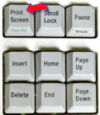

De: La Frikipedia, la enciclopedia extremadamente seria.
De: La Frikipedia, la enciclopedia extremadamente seria. De: La Frikipedia, la enciclopedia extremadamente seria.
|  | Screenshot
Esta imagen ha sido subida por alguien que nos ha demostrado que tiene la capacidad e intelecto suficiente para apretar la tecla Print Screen, y nos muestra un captura de pantalla de una página WEB, videojuego, programa de ordenador, película o emisión por televisión. |
Para usar esta plantilla no copies el código, simplemente escribe {{Imágenes Screenshot}}.
Autor(es):